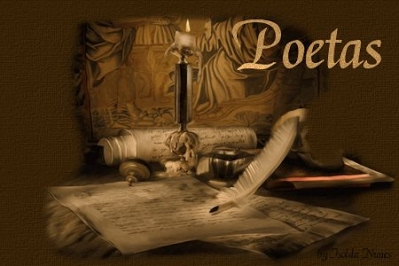

POETAS

Poeta (en español es válido utilizar, en el caso de la mujer, el femenino poetisa)12 es la persona que mediante la escritura o las palabras expresa emociones, sentimientos o sensaciones. El término vate3 es una forma literaria de referirse a la persona que compone obras poéticas. Según diversas fuentes la poesía como género literario tiene sus más profundas raíces en la tradición de la literatura oral, llegando más tarde a trasmitirse por escrito cuando en la Antigüedad empezaron a difundirse sistemas de escritura lo suficientemente complejos como para expresar lenguaje poético mediante símbolos escritos. Desde entonces, y de una forma generalizada y mayoritariamente dominante, se ha distinguido al poeta del resto de escritores por componer poesía, pero esta última en el sentido de una literatura ordenada mediante el arte de la métrica. Sin embargo existe ahora una literatura poética que escapa o intenta escapar al recurso de la métrica, el así llamado «verso libre». El poeta estadounidense Walt Whitman fue uno de los primeros en escribir este tipo de poesía, aunque el francés Jules Laforgue y otros varios autores del simbolismo hayan sido las fuentes más directas entre los poetas de lengua española. En la antigua Roma, los poetas profesionales generalmente estaban patrocinados por mecenas, partidarios adinerados, incluidos la nobleza y los oficiales militares. [1] Por ejemplo, Cayo Cilnius Mecenas, amigo de César Augusto, fue un importante mecenas de los poetas de Augusto, incluidos Horacio y Virgilio. Los poetas ocuparon una posición importante en la sociedad árabe preislámica con el poeta o sha'ir desempeñando el papel de historiador, adivino y propagandista. Las palabras de alabanza a la tribu (qit'ah) y las sátiras que denigran a otras tribus (hija') parecen haber sido algunas de las formas más populares de poesía temprana. El sha'ir representaba el prestigio y la importancia de una tribu individual en la península arábiga, y las simulacros de poesía o zajal reemplazarían las guerras reales. 'Ukaz, una ciudad comercial no muy lejos de La Meca, sería el anfitrión de un festival de poesía regular donde se exhibiría el arte de los sha'irs.